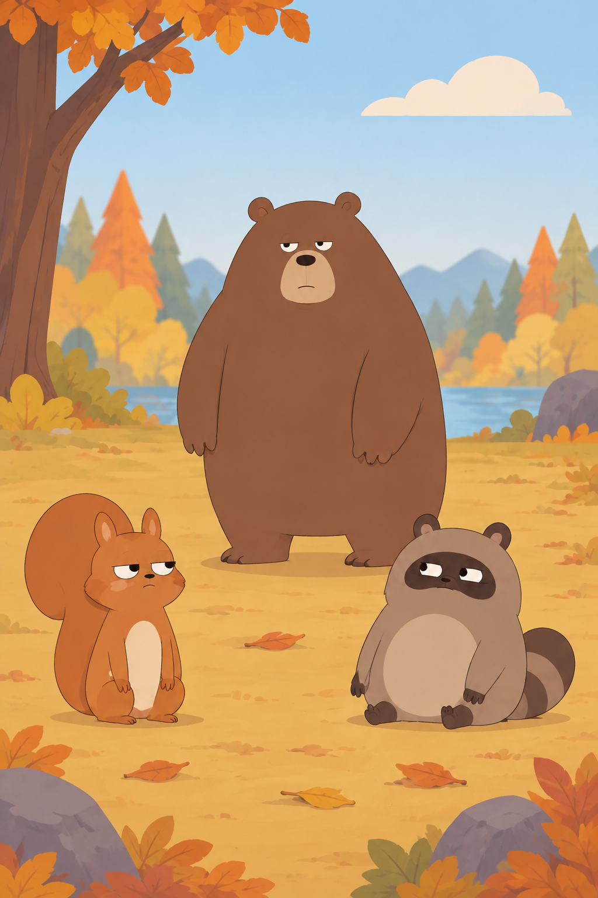

01 — みつける
公園の足もとに、
小さな発見。
落ち葉のそば、木の根元。いつもの道にも、まだ気づいていないものがある。見つけたら、まずは一枚撮ってみよう。
 あった！
あった！ きょうは、どこで見つけた？
きょうは、どこで見つけた？
01 — みつける
落ち葉のそば、木の根元。いつもの道にも、まだ気づいていないものがある。見つけたら、まずは一枚撮ってみよう。
あった！02 — かぞえる
むずかしい操作はいりません。マスターどんぐりがいっしょに数えます。
どんぐりを撮影枠に入れて、シャッター。
認識された数を見て、撮影したものを確認。
見つけた数が、アプリの中に残ります。
03 — なかまに会う
少し眠そうなクマ。どんぐりを気にしているリス。木の陰から見ているタヌキ。みんな、森の中で自分の一日を過ごしています。

04 — 森を見る
木の根元や落ち葉の下。どんぐりがあった場所には、森の時間が流れています。季節が変わると、出会う景色や仲間も少しずつ変わります。


05 — 元の場所へ
どんぐりは、森の仲間たちの食べものや、次の芽吹きにつながるもの。見つけた場所の近くへ戻してあげよう。
公園の自然を、みんなで大切に。